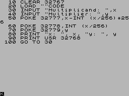

ruby-Z80¶ ↑
Gemfile¶ ↑
gem 'z80', git: 'https://github.com/royaltm/z80-rb.git'
A Z80 assembler powered by Ruby.¶ ↑
Ruby is a powerfull meta language, so why not to leverage its meta powers to have the ultimate macro system, compiler and builder for the Z80 assembler?
Now, to answer the question, you'll need:
-
a Ruby 2.1+
-
(optionally) a ZX Spectrum emulator
then
gem install specific_install gem specific_install royaltm/z80-rb
go to Ruby's irb or your REP of choice and snap'&'paste this:
require 'z80' class MyZXMath module Macros def mul8(eh, el, th, tl) # performs hl * a using (a, th, tl) # stops on CARRY out # result to (eh|el) raise ArgumentError unless th|tl != hl ns do |eoc| ld tl, l ld th, h ld hl,0 loop1 srl a jr NC, noadd add hl, th|tl jr C, eoc noadd jr Z, ok sla tl rl th jp NC, loop1 ok label unless eh == h and el == l ld el, l ld eh, h end end end end include Z80 export mul mul mul8(b, c, d, e) ret NC rst 0x08 # ERROR-1 data 1, [0x0A] # Error Report: Integer out of range end class Program include Z80 include Z80::TAP ld hl, [multiplicand] ld a, [multiplicator] jp math.mul org 0x0020 multiplicand words 1 multiplicator bytes 1 import MyZXMath, :math end calc = Program.new 0x8000 puts calc.debug
check the debug output:
8000: 2A2080 ld hl, (8020H) -> multiplicand 8003: 3A2280 ld a, (8022H) -> multiplicator 8006: C32380 jp 8023H -> math.mul 8009: 00 00 00 00 00 00 00 00 ........ 8011: 00 00 00 00 00 00 00 00 ........ 8019: 00 00 00 00 00 00 00 ....... 8020: 00 00 .. :multiplicand 8022: 00 . :multiplicator 8023: :math ============== MyZXMath ============== 8023: --- begin --- :mul 8023: 5D ld e, l 8024: 54 ld d, h 8025: 210000 ld hl, 0000H 8028: CB3F srl a :mul.loop1 802A: 3003 jr NC, 802fH -> noadd 802C: 19 add hl, de 802D: 380B jr C, 803aH -> EOC 802F: 2807 jr Z, 8038H :mul.noadd -> ok 8031: CB23 sla e 8033: CB12 rl d 8035: D22880 jp NC, 8028H -> loop1 8038: :mul.ok 8038: 4D ld c, l 8039: 44 ld b, h 803A: --- end --- :mul.EOC 803A: D0 ret NC 803B: CF rst 08H 803C: 0A . ^^^^^^^^^^^^^^ MyZXMath ^^^^^^^^^^^^^^
wait, there's more…
require 'zxlib/basic' prog = Basic.parse_source <<-END 10 CLEAR 32767 20 LOAD "multiply"CODE 30 INPUT "Multiplicand: ", x 40 INPUT "Multiplicator: ", y 50 POKE 32800, x-INT(x/256)*256 60 POKE 32801, INT(x/256) 70 POKE 32802, y 80 PRINT "x: ", x, "y: ", y 90 PRINT USR 32768 100 GO TO 30 END puts prog
Let's make a .tap file now:
prog.save_tap 'calculator', line: 10 calc.save_tap 'calculator', append: true, name: 'multiply'
go to ZX Spectrum or an emulator:
LOAD "calculator"
and load the calculator.tap file.
Enjoy!

More study at:¶ ↑
Z80 libraries¶ ↑
ZX Spectrum libraries¶ ↑
ZX Spectrum utilities¶ ↑
See examples in examples dir.¶ ↑
mathi_test-
torinak.com/qaop#l=http://z80.yeondir.com/examples/mathi_test.tap (integer math library tests)
multifill-
torinak.com/qaop#l=http://z80.yeondir.com/examples/multifill.tap (multitasking demo)
The YARTZ demo released at Speccy.pl/2019 was made entirely using this gem, including music.
Also features:¶ ↑
bin/zxconv
(requires RMagick rmagick.rubyforge.org/)
ZXCONV 0.4: Converting images to ZX Spectrum is fun!
Usage:
zxconv source destination [options]
rendering options:
-m, --mode 0|1|2|3|4 color mode
0: 15 colors
1: 8 basic colors
2: 8 bright colors
3: 15 colors, bright colors have priority
4: 15 colors, basic colors only on black backgrounds
-h, --hires n|c|p|i high resolution mode
n: 256x192 pixels 8x8 color attributes (ZX Spectrum)
c: 256x192 pixels 8x1 color attributes (ULA+)
p: 512x192 pixels monochrome (ULA+)
i: 256x384 pixels interlaced (ZX Spectrum 128k/ULA+)
-d, --dither n|r|f[n|r|f] dithering mode phase1,phase2
n: none
r: riemersma
f: floyd-steinberg
-c, --colors CCC.... list of allowed color indexes (0..7)
-0..15, --bg N background color (0..15)
-r, --ratio N/N bright/basic color level ratio
-l|L, --[no-]autolevel apply auto level to source image
-g|G, --[no-]autogamma apply auto gamma to source image
destination format and content:
-f, --format t|b|r|a zx spectrum data file format
t: save as TAP; one file is created
b: save as binary data; separate files for scr and bitamp
r: save as ruby source
a: save as assembler source
-s|S, --[no-]savescr save ZX Spectrum screen data
-b|B, --[no-]savebin save pixel bitmap (linear) data
-a|A, --[no-]saveattr save color attributes (linear) data
-i|I, --[no-]saveimg save image file
(format determined by destination ext.)
-x|X, --[no-]x2-pixels enlarge and normalize output image pixels
(only applied for image file)
default options are:
-m0 -hn -dn -r4/3 -0 -ft -s -i
zxconv -m4 -l -x examples/horse.jpg horse.png
ULA+ modes are also supported:
zxconv -m4 -l -hc -x examples/horse.jpg horse_hicolor.png
zxconv -l -df -hp -x examples/horse.jpg horse_hires.png
Download¶ ↑
Requirements¶ ↑
ruby 2.1.0 or later¶ ↑
- Author
-
Rafał Michalski